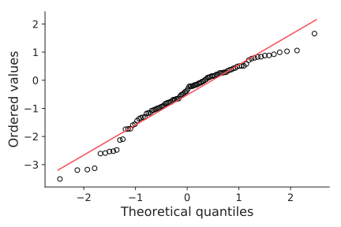

1Visual inspection: QQ-plot
A Quantile-Quantile plot is a scatterplot created by plotting two sets of quantiles against one another.
If both sets of quantiles came from the same distribution
(e.g., normal distribution), we should see the points forming a line that's roughly straight.

To get a sense, we need to understand the cumulative density functions (CDF):